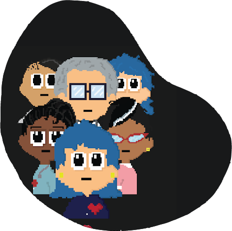

Microsoft Donuts |
Microsoft Donuts is a content creation & web development group started by a couple of students from the Univerrsity of Pretoria in 2022.
About Us
Caleb: I am a third year Multimedia student who specializes in Java, Javascript, C++ and web design. I pick up new things quickly and I am always striving to learn. I am interested in solving coding challenges and finding ways to improve anything I come across. I am an avid Destiny 2 player; I play as a Hunter which fits with my chaotic and fun-seeking personality. I also enjoy listening to rock music. My toxic trait is climbing on top of anything that has hand-holds, and my claim to fame is having a song or a meme for any situation.
Liezelle: Hi! My name is Liezelle. I’m studying Computer Science doing my third year. I have a passion for ICT mainly the front end development. The look and feel of applications rather than the backend. I’m knowledgeable in Java , C++ and a bit of HTML. I’m a creative so in my spare time I sketch, paint, sew and do some crocheting.
Jarod: I am a software developer that specializes in backend development with a small amount of frontend capabilities. I have worked freelance for a few companies and developed admin and sales systems that allow for streamlined sales and HR management.
Cassim: I specialise in both web development and UI design, but my main feat is visuals and animation since it's my passion and strengths. As a multimedia dev, I use these skills to make sure every piece of content is intractable, enjoyable to you and communicates what's best so you can take something from it so I hope you can take something special from our site!
Andrea: A BIS Multimedia student focused primarily on frontend development and content creation. Highly skilled in using Node.js, Unity, and the Adobe Suite. In my free time, I write short stories, do crosswords, and play Dungeons & Dragons.
Design
![[image: Bustle App Logo Outline]](Styles/images/Bustle icon.png)
UX & UI design for bustle—a mobile app developed to help public transport users keep track of public buses' routes, stop times, cost, and progress along the route.
See the project →This is a small Photoshop project done by Caleb. The goal was to take cartoonish characters and place them on a realistic background while making them look like they fit in by manipulating light, shadow and overlays.
See the project →This a coding assignment. It is an AI that solves the 8 Puzzle. It has 4 different algorithms that it uses to solve this puzzle, namely Breadth First Search, Best First Search, Hill Climbing and A* Search. It was made by Caleb and includes a report.
See the project →A digital art story of a plant person finding a light. This story was made as a web comic that you can read on our website and enjoy a good story. We show case our art skills here as well.
See the project →Here are many animated works that were made for fun but are stuff we provide as media to show what we are capable of.
See the project →Web Development
This is a website for a lyric video made by Caleb. The project is a part of the VIO202 module where students had to make a lyric video for 1 minute of a song of their choice and then make a teaser website. All of this had to be done in the aesthetic of the album artwork. I chose the song "Song #3" by Stone Sour off their album "Hydrograd".
See the project →This site allows you to play the hottest songs and view the hottest albums as well as the hottest artists from Deezer. Made by Jarod Jeffery
See the project →This quiz website was made for those who are enthusiastic about quizzes and those who are into having things sync with the music. Based on a game with a similar name, Just Bops & Quizzes is a good challenge and experience that let's you answer questions in a good mood with a good tune!
See the project →This is a website that helps you discover new games, gives you reviews of these games in the form of videos and ratings.
See the project →Project: HER

HER is a thriller exploration game, which uses a narrative adventure game format to combine a point-and-click escape room game with a piece of interactive fiction that puts the story's outcome into the player’s hands.
Inspired by hidden object games such as the Agatha Christie game series and choice-based games/series such as the game House and the Netflix series Bandersnatch, this game is aimed at those who enjoy mystery and thriller-based games/stories and those who enjoy narrative gameplay.
See the project →